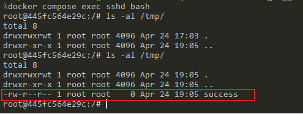

Unauthenticated Remote Code Execution in Erlang/OTP SSH (CVE-2025-32433)¶
Erlang/OTP SSH is the built-in SSH server component of the Erlang/OTP platform.
A critical vulnerability was discovered in the Erlang/OTP SSH server, allowing attackers to execute arbitrary system commands remotely without authentication by crafting specific SSH protocol messages. Affected versions include OTP-27.3.2 and earlier, OTP-26.2.5.10 and earlier, and OTP-25.3.2.19 and earlier.
- https://github.com/erlang/otp/security/advisories/GHSA-37cp-fgq5-7wc2
- https://github.com/erlang/otp/commit/6eef04130afc8b0ccb63c9a0d8650209cf54892f#diff-ceeb1aeeb602e1424c13d9da9383e0782f65869d6e64e015c194145b1a64edcd
- https://github.com/ProDefense/CVE-2025-32433
- https://datatracker.ietf.org/doc/html/rfc4254
Environment Setup¶
Run the following command to start an Erlang/OTP 27.3.2 based SSH server:
docker compose up -d
After startup, the container runs an Erlang SSH service listening on port 2222, which is mapped to the host's port 2222. You can access it using SSH tools or the provided exploit script.
Vulnerability Reproduction¶
Use the provided exploit.py script to reproduce the vulnerability. For example, the following command will create a file inside the target container:
python exploit.py -t 127.0.0.1 -p 2222 -c "touch /tmp/success"

The script sends a specially crafted SSH_MSG_CHANNEL_REQUEST (message number 94) packet, exploiting a flaw in the server's message handling to execute arbitrary commands during the unauthenticated phase. According to RFC 4254, the message structure is as follows:
byte SSH_MSG_CHANNEL_REQUEST
uint32 recipient channel
string "exec"
boolean want reply
string command
After successful exploitation, you can enter the container and see that the /tmp/success file has been created.
